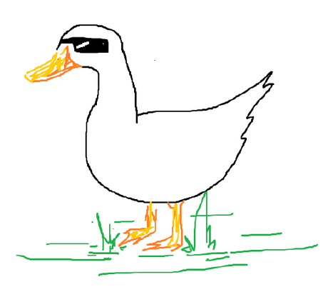
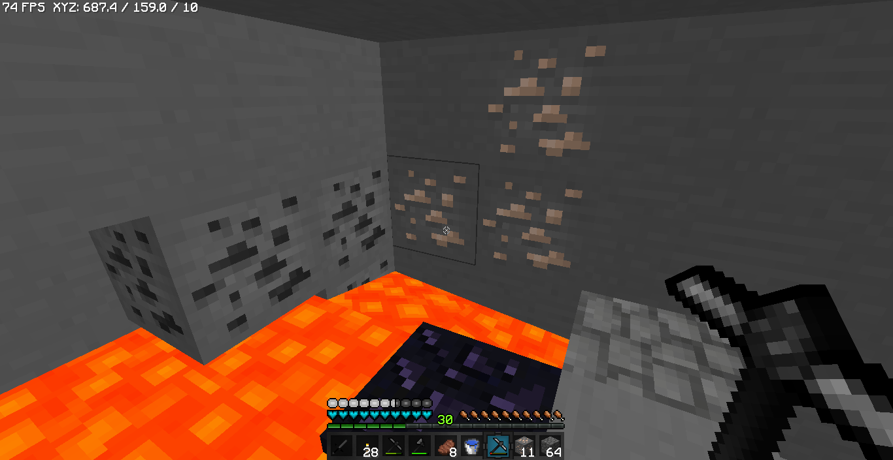
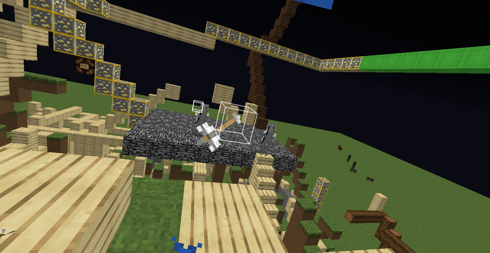
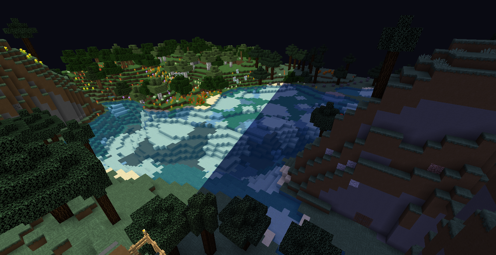

Looks like you've reached the website of...
Jongh!
I'm a 17 year old high school student on the West Coast, and I enjoy doing Minecraft development. You can usually find me on Hypixel Skywars or Overcast Network.My Mods

CoordsDisplay
CoordsDisplay is your basic coordinate and fps display mod. X and Y coordinates are truncated to two decimals, while height is a whole number. Created so that I could view my coordinates in UHC without toggling f3.BetterBow
BetterBow draws custom hitboxs for all arrows that are still airborne. This one was a pain in the ass to make, mainly because there was no good way for client-side verification of an arrow being airborne. Created so that I could improve my bow strafes.


FBToggle
FBToggle is a mod that allows the user to toggle fullbright lighting with a hotkey, changeable in the Controls section. Also changes users' gamma back to the default value if the user has changed it previously. The first mod I ever released!Social Media
clickety clack